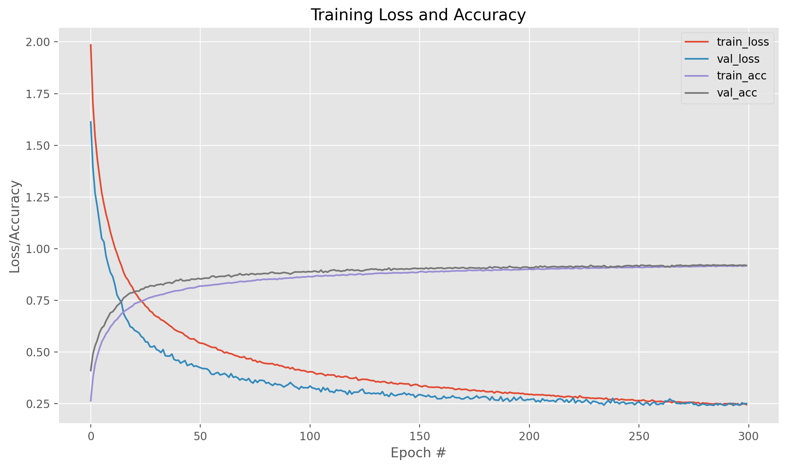
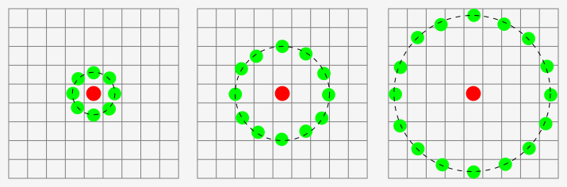
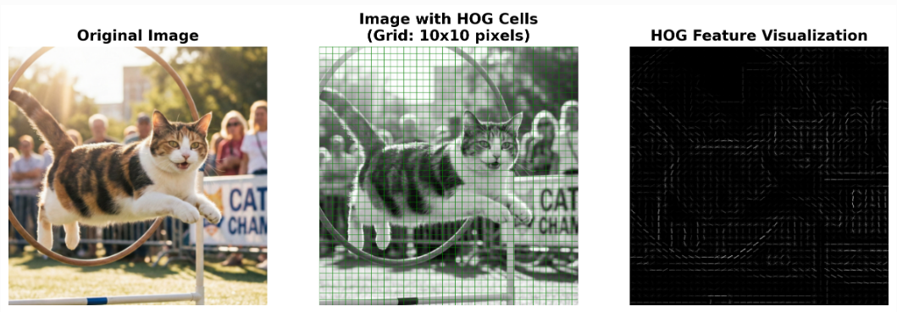

Konvoluutioverkot (CNN)
Perusteet
Motivaatio
Olet tutustunut kurssilla FCNN-verkkoihin, ja niiden rajat alkoivat löytyä Cifar10-datasetin kohdalla. Edellisen luvun tehtävässä koulutit FCNN-verkon – kenties arkkitehtuurilla 3072-1024-512-10 –, ja pääsit noin 55% tarkkuuteen. Tutustuessasi wikipedian Cifar10-sivuun huomasit, että jo 2010-luvun alkupuolella verkot kykenivät yli 95 % tarkkuuteen. On hyvä muistaa, että 95 % on jo merkittävän suuri tarkkuus. Graham lainaa Karpathyä, että: "For comparison, human performance on CIFAR-10 is estimated to be 6%." 3 Lukema on siis error rate, ei accuracy.
Miten tämä on mahdollista? Lienee selvää, että 2010-luvun alussa ratkaisu tuskin oli kasvattaa verkkoa ilman arkkitehtuurimuutoksia. Alla on taulukossa esiteltynä 3072-1024-512-10 FCNN-verkon parametrien lukumäärä.
| Layer | Shape | Count |
|---|---|---|
| fc1.weight | torch.Size([1024, 3072]) | 3,145,728 |
| fc1.bias | torch.Size([1024]) | 1,024 |
| fc2.weight | torch.Size([512, 1024]) | 524,288 |
| fc2.bias | torch.Size([512]) | 512 |
| fc3.weight | torch.Size([10, 512]) | 5,120 |
| fc3.bias | torch.Size([10]) | 10 |
| Total | 3,676,682 |
Olet varmasti kokeillut tätä ratkaisua itsekin: verkon kokoa kasvattamalla ei päästä kovin pitkälle. Mikä siis avuksi? Historiasta löytyy vastaus: konvoluutioverkot (Convolutional Neural Networks, CNN).
Ihmiseen kun vertaa, niin jo vuonna 2014 Grahamin Fractional Max-Pooling -malli saavutti huimat tulokset: "we obtained test errors of 4.50% (1 test), 3.67% (12 tests) and 3.47% (100 tests)" 3. Konvoluutioverkot mahdollistavat siis huomattavan tehokkaan tavan käsitellä kuvia. Ja mikä oli Grahamin mallin parametrien määrä? 74 miljoonaa parametria (jos filter_growth_rate = 160). Tosin paperissa mainitaan myös 12M parametria käyttänyt malli (filter_growth_rate = 64). Tämä pienempi malli on se, mikä on toteutettu kurssin koodissa.
\(74 \text{M}\) parametrin malli ylsi Grahamin paperin mukaan \(3.47 \%\) virheeseen CIFAR-10 datasetin kanssa. Opettajan kouluttamalla, pienemmällä \(12 \text{M}\) parametrin mallilla päästiin noin \(92 \%\) tarkkuuteen eli \(8 \%\) virheeseen. Tutustut tähän toteutukseen myöhemmin tehtäväosiossa, ja tähän tutustutaan myös Case Study: Fractional Max-Pooling (Graham, 2014)-otsikon alla hieman tarkemmin.

Kuva 1: 300 epookin koulutuksen aikaiset tarkkuus- ja virhekäyrät Grahamin Fractional Max-Pooling -mallille (12M parametria).
Rautavaatimukset
Vuonna 2014 olisi ollut mahdollista käyttää esimerkiksi GeForce GTX TITAN -korttia, jossa on 6 GB muistia. Muistiin mahtuisi \(\frac{6 \times 1024^3}{4} \approx 1600 \text{M}\) parametria (per BATCH). Jos batch size on 32, niin silloin käytössä on \(\frac{1600}{32} \approx 50 \text{M}\) parametria. Tämä on yhä reilusti enemmän kuin edellä esitellyssä pienemmässä 14 miljoonan parametrin verkossa. Koulutusvaiheessa muistiin pitää mahtua myös aktivoinnit, gradientit ja optimointiin liittyvät muuttujat. Näitä lukemia voi laskea, mutta sen voi myös selvittää kokeilemalla. Alla on typistetty nvidia-smi-komennon tulos koulutuksen aikana (GeForce RTX 3060 Ti, 8 GB muistia):
+-------------------------------------------------------------------+
| Processes: |
| GPU GI Type Process name GPU Memory |
| ID Usage |
|===================================================================|
| 0 N/A C ...n/notebooks/.venv/bin/python3 2650MiB |
+-------------------------------------------------------------------+
Jos 12M parametria vie 32-kokoisella erällä 2650 MiB muistia, niin suuremman mallin (filter_growth_rate = 160) huimat 74M parametria veisi noin 74/12 * 2650 ≈ 16342 MiB, eli noin 16 GB muistia. Jos mallin halutaan mahtuvan 6 GB VRAM:iin, niin batch-kokoa pitäisi pienentää. Jos batch-koko lasketaan neljännekseen (32/4 = 8), niin tällöin muistia tarvittaisiin enää 16342 / 4 ≈ 4085 MiB, eli noin 4 GB.
12M mallin kouluttamiseen kului opettajan GeForce RTX 3060 Ti:llä yli 11 tuntia (300 epookkia, noin 2 min 17 sek per epookki).
Syötekuva ja parametrien määrä
VGG-16-konvoluutioverkossa käytetään tyypillisesti kuvia koossa 224×224×3 (RGB, 3 kanavaa). Dataset on nimeltään ImageNet, jossa on 1000 eri luokkaa ja miljoonia kuvia. Konvoluutioverkossa VGG-16 on tästä huolimatta kokonaisuudessaan vain 138M parametria.
Kuinka olisi FCNN-verkon laita, jos input on 224x224x3 ja ensimmäinen piilotettu kerros 4096 neuronia? Input olisi siis 150,528-pituinen vektori. Tällöin pelkästään ensimmäisen piilotetun kerrokset olisivat parametrimäärältään:
Lyhyt historia
- 1980: Konvoluutioverkkojen juuret ulottuvat 1980-luvulle, jolloin Kunihiko Fukushima esitteli Neocognitron-mallin, josta polveutuvat myöhemmät konvoluutioverkot. 1
- 1994:MNIST-dataset ja LeNet-4.
- 1998: LeNet-5, tunnetuin näistä LeNet-X -malleista. ~60k parametria 4.
- 2012: AlexNet, merkittävä edistysaskel syvien konvoluutioverkkojen koulutuksessa, joka voitti ImageNet-kilpailun ylivoimaisesti. 5.
- 2015: VGG-16, syvä konvoluutioverkko, joka käytti nimensä mukaisesti 16 kerrosta. ~138 M parametria. 6 7.
- 2015: ResNet, esitteli "residual connections", jotka mahdollistivat erittäin syvien verkkojen koulutuksen. ~19 M parametria. 8 9.
- 2018: DenseNet, joka käytti tiheitä yhteyksiä kerrosten välillä parantaakseen tiedonsiirtoa ja vähentääkseen gradientin katoamista. ~28 M parametria. 10.
Käytäntö
Visual Feature Descriptors
On hyödyksi pohtia, miten kuvia käsitellään perinteisissä tietokonenäön sovelluksissa ennen konvoluutioverkkojen aikakautta. Yksi keskeinen käsite on feature vector eli piirrevektori, joka tiivistää kuvan olennaiset piirteet matemaattiseen muotoon. Piirrevektori voi näytää vaikka tältä:
# Piirrevektoreita
features = [
[0.1, 0.5, 0.3, ..., 0.7], # kuva 1
[0.3, 0.6, 0.1, ..., 0.4], # kuva 2
...,
]
# Nyt voisimme kouluttaa esimerkiksi binääriluokittelijan
labels = [0, 1, ..., 0] # 1 = kissa, 0 = koira
model.fit(features, labels)
Vektoreita voi etsiä monin eri tavoin, ja nämä tavat voidaan jakaa kahteen pääkategoriaan:
- Image descriptor: Koko kuva-alueen värijakauma histogrammina, mediaaniväri tai jokin/jotkin muut globaalit ominaisuudet.
- 1 kuva sisään, 1 vektori ulos.
- Feature descriptor: Kuvaa kuvan paikallisia piirteitä, kuten reunat, kulmat tai tekstuurit.
- 1 kuva sisään, N vektoria ulos (N on paikallisten alueiden määrä).
Koko kuvan pinta-alaa kuvaavat piirteet voivat olla harvoissa tapauksissa hyödyllisiä, mutta usein paikalliset piirteet tarjoavat enemmän informaatiota. Kuvan voi myös jakaa pienempiin osiin (esim. 100x100 pikselin kuva -> 10x10 pikselin ruudukko) ja laskea kullekin osalle (engl cell) piirrevektori.
Muista, että tämän kurssin aiheena eivät ole perinteiset tietokonenäön menetelmät, vaan konvoluutioverkot. Ethän siis käytät tähän osioon useita tunteja: riittää, että tunnistat perusidean, mikä tarjoaa mahdollisuuden ymmärtää konvoluutioverkkojen hyötyjä paremmin.
Tutustutaan alla lyhyesti kahteen globaaliin image descriptor -menetelmään: LBP ja HOG.
LBP
Tekstuureita voi kuvastaa esimerkiksi Local Binary Patterns (LBP) -menetelmällä, jonka esittelivät Ojala et al. vuonna 2002 Oulun yliopiston julkaisussa "Multiresolution Gray Scale and Rotation Invariant Texture Classification with Local Binary Patterns" 2. Paperi on ladattavissa kirjautumatta Stanfordin CS216B kurssin linkistä. LBP perustuu pikselin vertailuun sitä ympäröivien pikseleiden kanssa. Naiivi toteutus vertailee 3x3 alueen keskustaa muihin. Jos ympäröivä pikseli on kirkkaampi tai yhtä kirkas kuin keskuspikseli, sille annetaan arvo 1, muuten 0. Näin muodostuu 8-bittinen binaariluku, joka voidaan muuntaa desimaaliluvuksi. Kellonvastaisesti oletetaan siis, että ympäröivät pikselit ovat arvoltaan \(1 x 2^0 + 0 + 2^1 + ... + 1 x 2^7\). Tämä luku kuvaa kyseisen pikselin tekstuuria. Monimutkaisemmassa esimerkissä voidaan valita säde, jolloin ympäröivät pisteet eivät olekaan välittömästi keskuspikselin vieressä, vaan kauempana. Katso Kuva 2, jossa tämä toteutus on havainnollistettu.

Kuva 2: Local Binary Patterns (LBP) -menetelmä vertailee keskuspikseliä sitä ympäröiviin pikseleihin. Kuva: By Xiawi - Own work, CC BY-SA 3.0, https://commons.wikimedia.org/w/index.php?curid=11743214
Käytännössä?
Jos haluat kokeilla LBP:tä Pythonissa, niin skimage-kirjasto tarjoaa valmiin toteutuksen: Local Binary Pattern for texture classification. Jos haluat nähdä kokonaisemman esimerkin, Adrian Rosebrockin blogipostaus Face Recognition with Local Binary Patterns (LBPs) and OpenCV on hyvä paikka aloittaa. Huomaa, että näissäkin tapauksissa on vahva oletus, että sinulla on jokin tapa rajata kiinnostava alue kuvasta (esim. kasvot). Tähän voi käyttää perinteisiä tietokonenäön menetelmiä, kuten Haar-cascade -luokittelijoita tai HOG+SVM -yhdistelmää.
HOG
HOG (Histogram of Oriented Gradients) on toinen suosittu piirrevektorin muodostamismenetelmä, joka keskittyy kuvan reunojen ja kulmien suuntiin. HOG jakaa kuvan pienempiin alueisiin (soluihin, cells), ja laskee kullekin solulle histogrammin gradienttien suunnista. Gradientti kuvaa pikselin kirkkauden muutosta, ja HOG käyttää tätä tietoa tunnistaakseen kuvioita, kuten reunat ja kulmat. Dalal ja Triggs esittelivät HOG:n vuonna 2005 julkaistussa artikkelissaan "Histograms of Oriented Gradients for Human Detection". Artikkeli on ladattavissa Inria:n sivuilta.
Voi olla hyödyllistä silmäillä läpi myös: Medium.com | Katthik Mittal: A Gentle Introduction Into The Histogram Of Oriented Gradients

Kuva 3: HOG-piirteiden visualisointi. Kuva: 400x400 pikseliä, soluja 40x40. HOG-featuren pituus on 54756. Kuva: Nanobanana.
Interest Point Detector and Feature Descriptor
TODO: Selitä tässä lyhyesti, kuinka tunnistaa tärkeät pisteet kuvasta ja laskea niille piirrevektori (esim. SIFT, SURF, ORB).
Konvoluutioverkkojen rakenne
Aiemmasta opitusta on hyötyä, sillä konvoluutioverkkojen head eli viimeiset kerrokset ovat tuttuja Dense/FC-kerroksia. Alkuosa, eli body, sisältää uudenlaisia kerroksia: konvoluutiokerros (convolutional) ja koontikerros (pooling).
Konvoluutiokerros
Lue tämä: A Comprehensive Guide to Convolutional Neural Networks — the ELI5 way
Konvoluutiokerros suorittaa syötteelle konvoluution, joka on matemaattinen operaatio, jossa pieni suodin (kernel/filter) liukuu syötteen yli ja laskee pistetulon (dot product) suotimen ja syötteen vastaavien osien välillä. Tämä prosessi mahdollistaa paikallisten piirteiden, kuten reunojen, kulmien ja tekstuurien, tunnistamisen kuvasta. Aiheeseen tutustumiseen auttaa, jos tutkit, kuinka erilaiset suotimet (esim. reunojen tunnistamiseen tarkoitetut Sobel-suotimet) toimivat. Tähän on mainio apusivusto: Setosa.io | Image Kernels explained visually.
Koontikerros
TODO.
Case Study: Fractional Max-Pooling (Graham, 2014)
Tässä osiossa syvennytään Benjamin Grahamin vuonna 2014 esittelemään Fractional Max-Pooling -arkkitehtuuriin, joka saavutti aikanaan poikkeuksellisen alle 4 % virheasteen CIFAR-10-datasetillä. Malli on erinomainen esimerkki siitä, kuinka konvoluutioverkkojen suunnittelussa voidaan poiketa valtavirran konventioista ja saavuttaa silti huipputuloksia. Motivaatio arkkitehtuurin valinnalle case studyyn on juurikin tämä: älä lukitse itseäsi ajattelemaan, että on vain yksi tapa rakentaa konvoluutioverkkoja tai muitakaan neuroverkkoja.
Case studyn koodi on toteutettu 501_fractional_max_pooling.py-tiedostossa. Tähän osioon liittyy osion ensimmäinen tehtävä. Lue se alta.
Arkkitehtuurin filosofia ja suotimien kasvu
Tyypillisesti konvoluutioverkoissa, kuten VGG:ssä tai ResNetissä, kanavien määrä kaksinkertaistetaan tietyin väliajoin (esim. 64 \(\to\) 128). Grahamin mallissa lähestymistapa on kuitenkin erilainen: kanavien määrä kasvaa lineaarisesti kaavalla \(160 \times n\), missä \(n\) on kerroksen järjestysnumero. Tämä lineaarinen kasvu johtaa verkon syventyessä massiiviseen parametrimäärään. Kun perinteiset verkot saattavat pysytellä kymmenissä miljoonissa parametreissa, Grahamin malli CIFAR-10:lle sisältää noin 75 miljoonaa parametria. Tämä osoittaa, että suuri parametrimäärä ei välttämättä johda ylikouluttumiseen, kunhan verkon muut rakenteelliset valinnat tukevat oppimista.
Fractional Max-Pooling -mekanismi
Mallin keskeinen innovaatio on nimensä mukainen Fractional Max-Pooling. Perinteinen \(2\times2\) max-pooling puolittaa kuvan koon jokaisella askeleella, mikä rajoittaa verkon syvyyttä pienillä kuvilla. Grahamin ratkaisussa skaalauskerroin on \(\sqrt[3]{2}\) (noin 1,26). Tämä maltillisempi koon pienentäminen mahdollistaa huomattavasti syvemmät verkot ilman, että piirrekartat kutistuvat liian nopeasti \(1\times1\)-pikselin kokoon.
Lisäksi menetelmä hyödyntää satunnaisuutta. Pooling-alueet voidaan valita joko limittäin (overlapping) tai erillisinä (disjoint), ja niiden sijainti arvotaan. Tämä tuo verkkoon sisäänrakennettua regularisointia, sillä verkko ei voi luottaa siihen, että tietyt piirteet löytyvät aina täsmälleen samasta kohdasta suhteessa pooling-ruudukkoon.
Moderni "Head" -rakenne
Verkon loppuosa poikkeaa myös perinteisestä. Sen sijaan, että piirrekartat litistettäisiin (flatten) ja syötettäisiin tiheille (Dense/Linear) kerroksille, malli käyttää \(1\times1\) konvoluutiota (C1). Tämä kerros projisoi piirteet suoraan luokkien lukumäärää vastaavaksi vektoriksi. Tämä tekniikka vähentää parametrien määrää verkon loppupäässä ja on nykyään yleinen käytäntö ns. täysin konvoluutiopohjaisissa verkoissa (Fully Convolutional Networks).
Regularisointi ja koulutuksen erikoisuudet
Koska malli on valtava suhteessa datasetin kokoon, regularisointi on kriittistä. Mallissa sovelletaan "kasvavaa dropoutia": ensimmäisissä piilotetuissa kerroksissa dropout on 0 %, ja se kasvaa lineaarisesti 50 %:iin verkon loppupäätä kohden.
Toinen tekninen erikoisuus liittyy verkon syötteen kokoon. Koska pooling-suhde on murtoluku, verkon vaatima syötekoko ei ole triviaali laskea. Käytännössä haluttu output-koko päätetään ensin, ja vaadittu input-koko lasketaan "takaperin" kertomalla kokoa skaalauskertoimella jokaisen kerroksen kohdalla. Tämä johtaa usein siihen, että alkuperäisiä kuvia on pehmustettava (padding) runsaasti.
Inferenssi: Verkko on itsessään ensemble
Pooling-vaiheen satunnaisuudesta johtuen saman kuvan ajaminen verkon läpi useaan kertaan tuottaa hieman erilaisia ennusteita. Tätä ominaisuutta hyödynnetään testausvaiheessa (inference). Lopullinen luokitus ei perustu yhteen ajokertaan, vaan usean (esim. 12) ajokerran keskiarvoon (Model Averaging). Tämä toimii ikään kuin "köyhän miehen ensemble-menetelmänä", parantaen luotettavuutta ilman tarvetta kouluttaa useita erillisiä verkkoja. Tätä ei ole toteutettu kurssin koodissa, mutta voit halutessasi kokeilla tätä itse. Se hoituisi jotakuinkin näin:
outputs = [model(image) for _ in range(12)] # Run 12 times
avg_output = torch.stack(outputs).mean(dim=0) # Average predictions
Tehtävät
Tehtävä: Tutustuminen Fractional Max-Pooling -toteutukseen
Avaa tiedosto notebooks/nb/500/501_fractional_max_pooling.py. Tutki koodia ja pohdi oppimispäiväkirjassasi seuraavia kysymyksiä:
- Käänteinen koon laskenta: Miten
get_fmp_sizes-funktio toimii? Miksi verkon kerrosten koot lasketaan "lopusta alkuun" (output \(\to\) input)? - Dynaaminen padding: Toteutuksessa käytetään dynaamista paddingia (
pad_total). Miksi tämä on välttämätöntä juuri tässä arkkitehtuurissa, kun taas esimerkiksi VGG-verkossa pärjätään kiinteällä paddingilla? - Verkon "häntä" (Tail): Miten
FMPNet-luokanforward-metodin loppuosa eroaa perinteisestänn.Linear-kerroksesta? Miksi tässä on käytetty \(1\times1\) konvoluutiota (convC1)? Onko kenties niin, että matemaattisesti \(1\times1\) konvoluutio \(1\times1\) kokoisella spatiaalisella kartalla on identtisen täysin kytketyn kerroksen kanssa? - Ensemble-ennustaminen: Miten mallin ennusteet lasketaan testausvaiheessa? Miksi sama kuva syötetään verkolle useita kertoja? Eikö neuroverkko olekaan deterministinen? Miksi minun toteutus toimii, vaikka siinä ei syötetä kuin kerran?
- Suotimien kasvu: Miksi
filter_growth_rateon toteutettu siten, että kanavien määrä kasvaa lineaarisesti (\(k \times n\))? Tähän vastataan alkuperäisessä paperissa.
Mallin kouluttamiseen meni opettajan GeForce RTX 3060 Ti:llä yli 11 tuntia (300 epookkia, noin 2 min 17 sek per epookki). Saat kouluttaa mallin itse tai voit käyttää valmista mallia, joka on tallennettu tiedostoon notebooks/gitlfs-store/502_cifar10_fractionalmaxp.pth. Huomaa, että repositorio tulee kloonata Git LFS -tuen kanssa, jotta malli löytyy koneeltasi. Jos tämä on täysin vieras konsepti, lue: How to Git | GitLab: LFS
Tehtävä: FMP ja MNIST
Toteuta tiedostoon notebooks/nb/500/503_fractional_max_pool_MNIST.py versio Grahamin mallista, joka on sovitettu MNIST-datasetille.
Alkuperäisessä paperissa (Graham, 2014) on määritelty MNIST:lle kevyempi arkkitehtuuri kuin CIFAR-10:lle. Etsi paperista (tai kokeile itse) sopivat parametrit ja muokkaa koodia seuraavasti:
- Dataset: Vaihda CIFAR-10 \(\to\) MNIST. Huomioi, että MNIST on mustavalkoinen (1 kanava), kun taas CIFAR-10 on värillinen (3 kanavaa).
- Arkkitehtuuri: Paperin mukaan MNIST-mallissa käytetään eri määrää kerroksia ja eri kasvukerrointa.
- CIFAR-10-mallissa kerroksia oli 12 ja kasvukerroin suuri.
- MNIST-mallille riittää vähempi määrä kerroksia ja pienempi kasvukerroin.
- Myös skaalauskerroin \(\alpha\) voi olla eri (esim. \(\sqrt{2}\) vs \(\sqrt[3]{2}\)), jotta kuva kutistuu sopivasti 28x28-koosta.
- Tavoite: Kouluta malli ja vertaa saavuttamaasi tarkkuutta
P.S. Voit kokeilla, kauan mallin koulutus kestää GPU vs. CPU. Jos haluat säästää aikaa, selvitä 10 epookkiin kuluva aika ja skaalaa se haluamaasi epookkimäärään.
Tehtävä: LeNet ja MNIST
Toteuta tiedostoon notebooks/nb/500/504_lenet_MNIST.py LeNet-5 -arkkitehtuuri MNIST-datasetille. Vertaile sen suorituskykyä toteuttamaasi Grahamin Fractional Max-Pooling -malliin. Saat itse valita, toteutatko mahdollisimman orjallisesti alkuperäisen mallin vai Adrian Rosebrockin tulkitseman modernisoidun version.
Vaihtoehto 1: Orjallinen LeNet-5
Mallin arkkitehtuuri löytyy LeCunin alkuperäisestä paperista 4. Jos haluat olla uskollinenalkuperäiselle arkkitehtuurille, voit käyttää LeCunin tanh-aktivointifunktiota, jonka toteutus on \(1.7159 \times \tanh(\frac{2}{3}x)\).
Alkuperäisessä paperissa mainitaan 32x32 syötekoko. MNIST on 28x28, joten voit lisätä kuviin 2 pikselin pehmusteen (padding) joka reunalle, jolloin kuvat ovat 32x32-kokoisia. Tämä prosessi liittyy paperin lauseeseen: "In the first version, the images were centered in a 28 x 28 image by computing the center of mass of the pixels, and translating the image so as to position this point at the center of the 28x28 field In some instances, this 28x28 field was ex tended to 32x32 with background pixels".
Vaihtoehto 2: Modernisoitu LeNet-5
Modernisoitu versio on Adrian Rosebrockin blogipostauksesta LeNet – Convolutional Neural Network in Python tai hänen kirjastaan Deep Learning for Computer Vision with Python. Tässä versiossa käytetään ReLU-aktivointia. Arkkitehtuuri on seuraava:
| Layer Type | Output Size | Filter Size / Stride |
|---|---|---|
| Input | 28x28x1 | |
| Conv1 | 28x28x20 | 5x5 / K = 20 |
| Act1 | 28x28x20 | ReLU |
| Pool1 | 14x14x20 | 2x2 / S = 2 |
| Conv2 | 14x14x50 | 5x5 / K = 50 |
| Act2 | 14x14x50 | ReLU |
| Pool2 | 7x7x50 | 2x2 / S = 2 |
| FC1 | 500 | |
| Act3 | 500 | ReLU |
| FC2 | 10 | |
| Softmax | 10 |
Lähteet
-
Fukushima, K. Neocognitron: A Self-organizing Neural Network Model for a Mechanism of Pattern Recognition Unaffected by Shift in Position. Princeton. https://www.cs.princeton.edu/courses/archive/spr08/cos598B/Readings/Fukushima1980.pdf ↩
-
Ojala, T., Pietikäinen, M., & Mäenpää, T. Multiresolution Gray Scale and Rotation Invariant Texture Classification with Local Binary Patterns. IEEE Transactions on Pattern Analysis and Machine Intelligence, 24(7), 971-987. 2002. https://doi.org/10.1109/34.1000236 ↩
-
Graham, B. Fractional Max-Pooling. University of Warwick. 2014 (version 4: 2015). https://doi.org/10.48550/arXiv.1412.6071 ↩↩
-
LeCun, Y., Bottou, L., Bengio, Y., & Haffner, P. Gradient-Based Learning Applied to Document Recognition. Proceedings of the IEEE, 86(11). http://vision.stanford.edu/cs598_spring07/papers/Lecun98.pdf ↩↩
-
Krizhevsky, A., Sutskever, I., & Hinton, G. E. ImageNet Classification with Deep Convolutional Neural Networks. https://papers.nips.cc/paper/2012/file/c399862d3b9d6b76c8436e924a68c45b-Paper.pdf ↩
-
Simonyan, K., & Zisserman, A. Very Deep Convolutional Networks for Large-Scale Image Recognition. https://arxiv.org/abs/1409.1556 ↩
-
Hassan, M. VGG16 – Convolutional Network for Classification and Detection. Neurohive. https://neurohive.io/en/popular-networks/vgg16/ ↩
-
He, K., Zhang, X., Ren, S., & Sun, J. Deep Residual Learning for Image Recognition. https://arxiv.org/abs/1512.03385 ↩
-
Azeem. Understanding ResNet Architecture: A Deep Dive into Residual Neural Network. https://medium.com/@ibtedaazeem/understanding-resnet-architecture-a-deep-dive-into-residual-neural-network-2c792e6537a9 ↩
-
Huang, G., Liu, Z., Van Der Maaten, L., & Weinberger, K. Q. Densely Connected Convolutional Networks. https://arxiv.org/abs/1608.06993 ↩